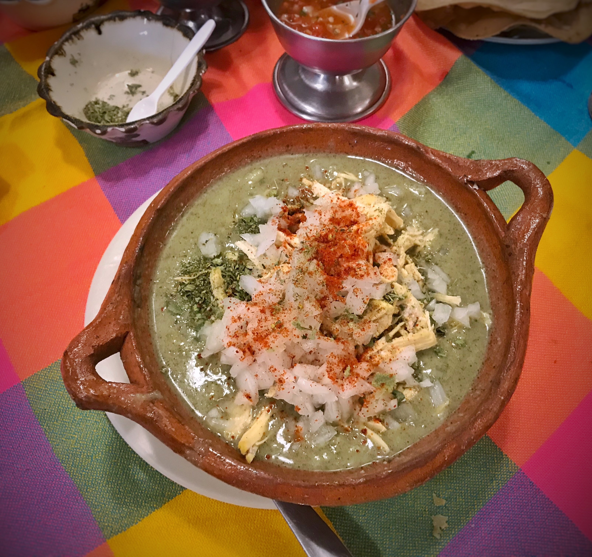

Pozole
Home

Description
Pozole (Spanish pronunciation: [po'sole]; from Nahuatl languages: pozolli, meaning cacahuazintle, a variety of corn or maize) is a traditional soup or stew from Mexican cuisine. It is made from hominy with meat (typically chicken or pork), and can be seasoned and garnished with shredded lettuce or cabbage, chili peppers, onion, garlic, radishes, avocado, salsa or limes. Known in Mesoamerica since the pre-Columbian era, the stew is common across Mexico and neighboring countries, served both as a day-to-day meal and as a festive dish.
Ingredients
- 2 pounds boneless, skinless chicken breasts, cut into 1 1/2- to 2-inch pieces
- ¼ cup Mazola Corn Oil
- 1 medium onion, diced
- 1 tablespoon minced garlic
- 1 small jalapeño or serrano chili pepper, seeded and minced
- 2 tablespoons Mazola Chicken Flavor Bouillon Powder
- 8 cups water
- 1 (28 ounce) can white or yellow hominy, drained
- ¼ cup fresh lime juice
- 2 teaspoons Spice Islands Oregano
- 1 Spice Islands Bay Leaves
Steps
- Pat chicken dry with paper towels and season with salt and pepper.
- Heat oil in a large skillet over medium-high heat. Add chicken and brown lightly, about 2 minutes per side. Transfer chicken to a 6-quart slow cooker.
- Cook onion in the same skillet over medium heat until softened, 2 to 3 minutes. Stir in garlic, minced chile, and bouillon powder; continue cooking for 1 minute. Pour in 1 cup water and stir well. Remove from heat and pour into the slow cooker. Add remaining 7 cups water, hominy, lime juice, oregano, and bay leaf to the slow cooker.
- Cover and cook on Low for 4 to 6 hours or High for 3 to 4 hours. Soup is ready when chicken is tender and easily pulled apart. Shred chicken using 2 forks. Ladle soup into bowls and let guests garnish soup as desired.